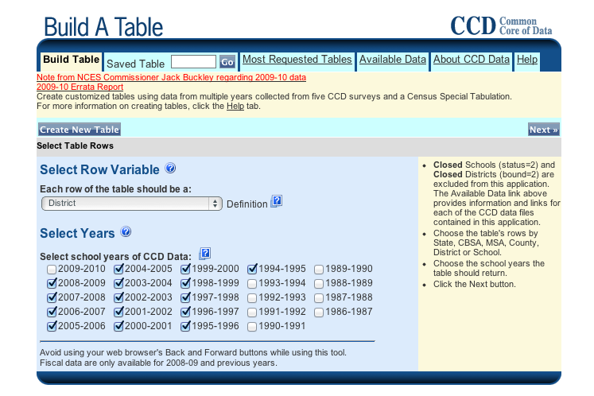
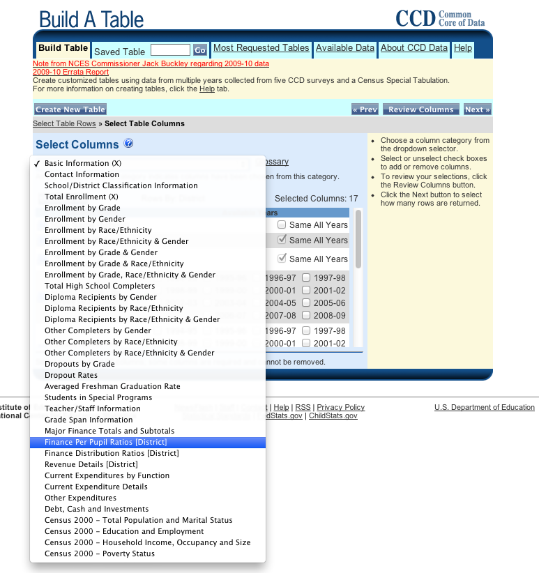
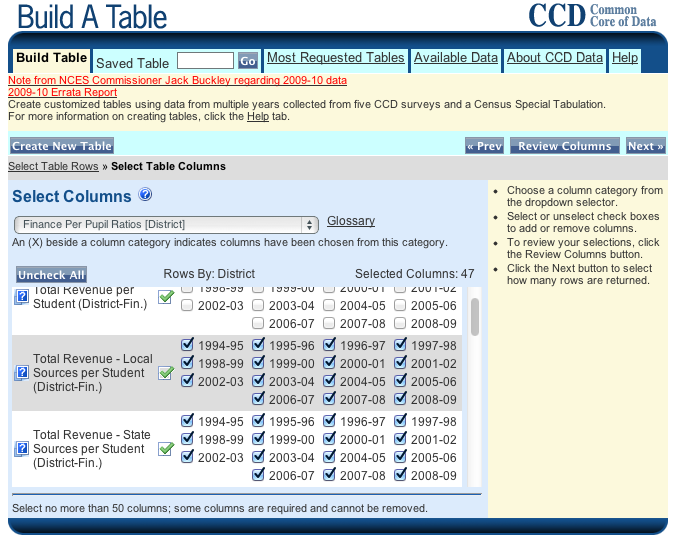
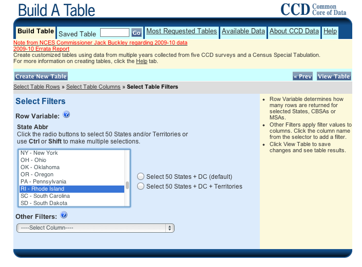
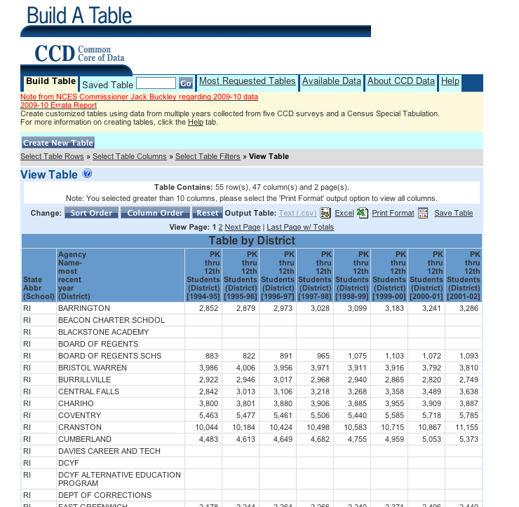

2012-07-12
My analysis on Nesi’s Notes depended entirely on the National Center for Education Statistics’ Common Core Data. The per pupil amounts reported to NCES may look a bit different from state sources of this information. There are several explanations of this. First, the enrollment counts used to generate per pupil amounts are based on an October 1st headcount. In Rhode Island, we use something called “average daily membership” (ADM) as the denominator and not a headcount. The ADM of a district is calculated by taking all the students who attended the district at any point in the year and adding up the number of school days they were enrolled for. The total membership (i.e. all the student*days, for those who like to think about this in units) is divided by the number of school days per year, almost always 180 (so student*days / days/year = students/year). Additionally, NCES does not record the final three digits on most financial data. These rounding issues will also make the per pupil data seem different from state reports.
I wanted to use the NCES to make sure that the data in my post was easily reproducible by any member of the public. I also thought using NCES would serve as a great learning opportunity for the wonks and nerds out there who never even realized how much rich data about schools and school finance are available through the federal government. That being said, I do believe that the state reported numbers are far more accurate than those available from the federal government. That is not to say that the federal data is bad. On the contrary, that data is substantially vetted and validated and is very useful for research. My concern was only that some of the tiny differences in the NCES data that deviated from what I would consider to be ideal data might reach the level where they affected the validity of the conclusions I wanted to draw.
Although I was writing as a private citizen without the support of the Rhode Island Department of Education, I did use my access to RIDE data to ensure that differences in the federal reports were not significant enough to call into question my analysis. I found that both the direction and magnitude of all the trends that I describe in the Nesi’s Notes post held up with the state data. While all of that information is publicly available, it is less easily accessible than NCES data and doesn’t provide the same opportunity for analysis outside of financial data. For these reasons, I decided to stick with NCES.
So how do you reproduce the data I used?
First, go to the NCES Common Core Data Build a Table site. On the drop down, select “District” as the row variable and select the last fifteen years excluding 2009-10 (since there is no current financial data available for that year).

After clicking next, hit “I Agree” on the pop-up.
Now select “Finance Per Pupil Ratios” for the first column.

Click the green arrow that selects all years for local sources per student and state sources per student.

Click “Next>>” on the top right. Now select only RI-Rhode Island for your row variable.

Finally, click view table to see the results. I recommend downloading the Test (.csv) file to work with.

And finally, here’s the R code to reshape/rejigger the data I used and produce the graphics from the Nesi’s Notes post.
## Using NCES data to analyze education finances to Woonsocket over 15 years.
## Initialize required packages
require(plyr)
require(reshape2)
require(ggplot2)
require(scales)
## Best to ignore this function-- it's mostly magic to me too. Essentially,
## multiplot takes in a bunch of plots and then puts them into one image
## arranging them by columns equal to a paramter cols. Credit to:
## http://wiki.stdout.org/rcookbook/Graphs/Multiple%20graphs%20on%20one%20page%20( ggplot2)/
multiplot <- function(..., plotlist=NULL, cols) {
require(grid)
# Make a list from the ... arguments and plotlist
plots <- c(list(...), plotlist)
numPlots = length(plots)
# Make the panel
plotCols = cols # Number of columns of plots
plotRows = ceiling(numPlots/plotCols) # Number of rows needed, calculated from # of cols
# Set up the page
grid.newpage()
pushViewport(viewport(layout = grid.layout(plotRows, plotCols)))
vplayout <- function(x, y)
viewport(layout.pos.row = x, layout.pos.col = y)
# Make each plot, in the correct location
for (i in 1:numPlots) {
curRow = ceiling(i/plotCols)
curCol = (i-1) %% plotCols + 1
print(plots[[i]], vp = vplayout(curRow, curCol ))
}
}
## Load data from the modified CSV. I made the following changes from the NCES
## downloaded file: 1) I removed all of the description header so that row one
## of the CSV is the attribute names; 2) I pasted the transposed state values
## to the final observation so that I have a state observation row analogous to
## the other LEA rows.
raw_data <- read.csv('rawdata.csv')
## Change name of first column to make things easier for later.
names(raw_data)[1] <- c('distname')
## Creating Time Series Data for each community of interest.
## I'm going to use a custom function to automate the steps required to create
## district level data in a time series.
create_ts <- function(name){
# First create a column vector with the local funding
# A few things to note: First, t() is the transpose function and helps to
# make my "wide" data (lots of columns) "long" (lots of rows). Second, R
# has a funny behavior that is very covenient for data anaylsts. It performs
# many common mathematical operations element-wise, so the simple division
# of two vectors below actually divides element by element through the
# vector, e.g. column 17 is divided by column 2 to provide the first element
# in the resulting vector. This makes calculating per pupil amounts very
# convenient.
local <- t(subset(raw_data,distname==name)[,c(17:31)]/
subset(raw_data,distname==name)[,c(2:16)])
# Performing the same operation for state per pupil amounts.
state <- t(subset(raw_data,distname==name)[,c(32:46)]/
subset(raw_data,distname==name)[,c(2:16)])
# Putting state and local data together and getting rid of the nasty
# attribute names from NCES by just naming the rows with a sequence
# of integers.
results <- data.frame(local,state,row.names=seq(1,15,1))
# Naming my two attributes
names(results) <- c('local','state')
# Generating the year attribute
results[['year']] <- seq(1995, 2009, 1)
# This command is a bit funky, but basically it makes my data as long as
# possible so that each line has an ID (year in this case) and one value
# (the dollars in this case). I also have a label that describes that value,
# which is local or state.
results <- melt(results, id.vars='year')
# Returning my "results" object
results
}
## Create the Woonsocket data-- note that R is case sensitive so I must use all
## capitals to match the NCES convention.
woonsocket <- create_ts('WOONSOCKET')
pawtucket <- create_ts('PAWTUCKET')
providence <- create_ts('PROVIDENCE')
westwarwick <- create_ts('WEST WARWICK')
state <- create_ts('STATE')
## Developing a plot of JUST local revenues for the selected communities
## First I create a percentage change data frame. I think that looking at
## percent change overtime is generally more fair. While the nominal dollar
## changes are revealing, my analysis is drawing attention to the trend rather
## than the initial values.
## First, I pull out just the local dollars.
perwoonlocal <- subset(woonsocket,variable=='local')
## Now I modify the value to be divided by the starting value - 100%
perwoonlocal[['value']] <- with(perwoonlocal, (value/value[1])-1)
## A little renaming for the combining step later
names(perwoonlocal) <-c('year','disname','value')
perwoonlocal[['disname']]<-'Woonsocket'
## I repeat this procedure for all the districts of interest.
perpawlocal <- subset(pawtucket,variable=='local')
perpawlocal[['value']] <- with(perpawlocal, (value/value[1])-1)
names(perpawlocal) <-c('year','disname','value')
perpawlocal[['disname']]<-'Pawtucket'
perprolocal <- subset(providence,variable=='local')
perprolocal[['value']] <- with(perprolocal, (value/value[1])-1)
names(perprolocal) <-c('year','disname','value')
perprolocal[['disname']]<-'Providence'
perwwlocal <- subset(westwarwick, variable=='local')
perwwlocal[['value']] <- with(perwwlocal, (value/value[1])-1)
names(perwwlocal) <-c('year','disname','value')
perwwlocal[['disname']]<-'West Warwick'
perrilocal <- subset(state,variable=='local')
perrilocal[['value']] <- with(perrilocal, (value/value[1])-1)
names(perrilocal) <-c('year','disname','value')
perrilocal[['disname']]<-'State Average'
## The same process can be used for state data
perwoonstate <- subset(woonsocket,variable=='state')
## Now I modify the value to be divided by the starting value - 100%
perwoonstate[['value']] <- with(perwoonstate, (value/value[1])-1)
## A little renaming for the combining step later
names(perwoonstate) <-c('year','disname','value')
perwoonstate[['disname']]<-'Woonsocket'
## I repeat this procedure for all the districts of interest.
perpawstate <- subset(pawtucket,variable=='state')
perpawstate[['value']] <- with(perpawstate, (value/value[1])-1)
names(perpawstate) <-c('year','disname','value')
perpawstate[['disname']]<-'Pawtucket'
perprostate <- subset(providence,variable=='state')
perprostate[['value']] <- with(perprostate, (value/value[1])-1)
names(perprostate) <-c('year','disname','value')
perprostate[['disname']]<-'Providence'
perwwstate <- subset(westwarwick, variable=='state')
perwwstate[['value']] <- with(perwwstate, (value/value[1])-1)
names(perwwstate) <-c('year','disname','value')
perwwstate[['disname']]<-'West Warwick'
perristate <- subset(state,variable=='state')
perristate[['value']] <- with(perristate, (value/value[1])-1)
names(perristate) <-c('year','disname','value')
perristate[['disname']]<-'State Average'
## Pull together the data sets for the overall picture.
localfunding <- rbind(perwoonlocal, perpawlocal,perprolocal,perwwlocal,perrilocal)
statefunding <- rbind(perwoonstate, perpawstate,perprostate,perwwstate,perristate)
## A little ggplot2 line plot magic...
localperplot <- ggplot(localfunding,aes(year, value, color=disname)) +
geom_line() +
geom_text(data=subset(localfunding, year==2009),
mapping=aes(year,value,
label=paste(100*round(value,3),'%',sep='')),
vjust=-.4) +
scale_y_continuous('Percent Change from FY1995',
label=percent) +
scale_x_continuous('Year') +
opts(title='Percent Change in Local Per Pupil Revenue, FY1995- FY2009') +
opts(plot.title=theme_text(size=16,face='bold')) +
opts(legend.title=theme_blank()) +
opts(legend.position=c(.08,.82))
stateperplot <- ggplot(statefunding,aes(year, value, color=disname)) +
geom_line() +
geom_text(data=subset(statefunding, year==2008 | year==2009),
mapping=aes(year,value,
label=paste(100*round(value,3),'%',sep='')),
vjust=-.4) +
scale_y_continuous('Percent Change from FY1995',
label=percent) +
scale_x_continuous('Year') +
opts(title='Percent Change in State Per Pupil Revenue, FY1995- FY2009') +
opts(plot.title=theme_text(size=16,face='bold')) +
opts(legend.title=theme_blank()) +
opts(legend.position=c(.08,.82))
ggsave('localperplot.png',localperplot,width=10,height=8,units='in',dpi=72)
ggsave('stateperplot.png',stateperplot,width=10,height=8,units='in',dpi=72)
## Proportion of Aid
proportion <- function(data){
# This reshapes the data so that there is a year, local, and state column.
# The mean function has no purpose, because this data is unique by year
# variable combinations.
prop <- dcast(data,year~variable,mean)
# Adding local and state get our total non-federal dollars
prop[['total']] <- apply(prop[,2:3],1,sum)
prop[['perlocal']] <- with(prop, local/total)
prop
}
## Prepare new data frames for proportion graphs
propwoon <- as.data.frame(c(disname='Woonsocket',
proportion(woonsocket)))
proppaw <- as.data.frame(c(disname='Pawtucket',
proportion(pawtucket)))
propprov <- as.data.frame(c(disname='Providence',
proportion(providence)))
propww <- as.data.frame(c(disname='West Warwick',
proportion(westwarwick)))
propri <- as.data.frame(c(disname='State Average',
proportion(state)))
## Note, I could have called proportion() inside of the rbind(), but I wanted
## my code to be clearer and felt there may be some use for the independent
## proportion data frames in further analysis. Sometimes more lines of code
## and more objects is easier to maintain and more flexible for exploratory,
## non-production code. This is especially true when handling such small
## data sets that there is no impact on performance.
locprop <- rbind(propwoon, proppaw,propprov,propww,propri)
## Some ggplot2 magic time!
localpropplot <- ggplot(locprop,aes(year, perlocal, color=disname)) +
geom_line() +
geom_text(data=subset(locprop, year==1995 | year==2008 | year==2009),
mapping=aes(year,perlocal,
label=paste(100*round(perlocal,3),'%',sep='')),
vjust=-.4) +
scale_y_continuous('Percent Change from FY1995',
label=percent) +
scale_x_continuous('Year') +
opts(title='Percent Change in Local Proportion of Per Pupil Revenue\n Excluding Federal Funding, FY1995-FY2009') +
opts(plot.title=theme_text(size=16,face='bold')) +
opts(legend.title=theme_blank()) +
opts(legend.position=c(.9,.65))
ggsave('localpropplot.png',localpropplot,width=10,height=8,units='in',dpi=72)
This post is the third of a three-part follow up on my guest post for Nesi’s Notes. Parts I and II can be found here.
See below for more information now that Ethan Brown has weighed in with some great code.
A recent post I came across on r-bloggers asked for input on visualizing ranked Likert-scale data.
I happen to be working on a substantial project using very similarly structured data so I thought ...